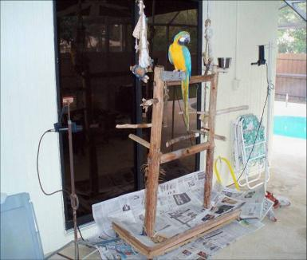

| Reasons for recording a talking bird & suggestions for how to do it |
Reasons to record a bird's speech
- To permit friends to hear one's bird speak, as many birds do not speak when
strangers are present.
- To prove the identity of your bird through its speech.
- As a history for study and familiarization by a new caretaker.
- To listen to a bird's speech in order to gain proficiency at understanding the
bird's dialect.
- To permit others to study and analyze a bird's utterances, especially in
investigations of meaning.
- By listening to a bird's words, phrases, and sentences, one learns whether his
parrot is a participant in interspecies communication by conveying messages
through speech.
You are here:
Recording Birds
Recording Birds
| Arielle says what most Americans say, click the play button to hear her words. No transcription provided, as everyone will recognize what Arielle said. (Click here to play if play button does not appear.) |
| Arielle understands speech and speaks thoughtfully using English words, phrases, and sentences. |
Arielle perches on a cement
perch at one end of her gym.
In this picture there are two
microphones in position to
capture her speech. The
scheme permits recording
Arielle's talking sessions
from inside the house.
I improvised the microphone
supports from a tripod
salvaged from a junked
projection screen; the other
stand is a plastic water pipe
on a Christmas tree base.
perch at one end of her gym.
In this picture there are two
microphones in position to
capture her speech. The
scheme permits recording
Arielle's talking sessions
from inside the house.
I improvised the microphone
supports from a tripod
salvaged from a junked
projection screen; the other
stand is a plastic water pipe
on a Christmas tree base.

Photo by the author
Recording speech sounds ultimately leads to comparing the words
using a computer as a tool for analyzing the sounds.
To see the sound spectrum contained in my speech and Arielle's
speech click on the word to the right. Spectrogram
using a computer as a tool for analyzing the sounds.
To see the sound spectrum contained in my speech and Arielle's
speech click on the word to the right. Spectrogram
The basics of recording bird speech
How to make your own bird-speech recordings
Recording bird speech can be done with comparatively primitive machinery, and that is precisely how I began
which is a device that can be carried to wherever the bird is. Either the diminutive machine or a separate
microphone can be placed close to the bird's cage or the perch from which the bird speaks. The disadvantage of
a self-contained recorder is that it can pick up handling noise or noise transmitted through the furniture upon
which the unit rests. Surrounding noise can mask the desired speech, especially if the bird speaks softly. An
excited parrot can overload the recorder unless care is taken to position the machine a distance from a loud
bird. Using the automatic recording level helps avoid distortion too.
A separate directional microphone will yield better results. A general-purpose cardioid microphone (one with a
heart-shaped sensing pattern) will reduce undesired sounds from positions behind or to the side of the
microphone. The user should experiment with the microphone position to obtain best results. A home “hi-fi”
component recorder is likely an alternative to a portable machine.
Avoid a common error: recording at too high a level. Recording at excessive levels will cause the sound to be
distorted. Using an audio cassette recorder is better than making no recordings, but the analog technology
suffers from different problems, especially for long-term storage. Contact the author if you have questions.
Some years ago, I switched to recording Arielle's speech onto compact discs. The CD format does not suffer
from the same defects as taped recordings and potentially offer a more permanent, archival, storage for data.
People wishing to make recordings on other digital recording devices are encouraged to use whatever devices
they find convenient.
Recordists using digital devices should be aware that sound files, depending upon the resolution selected, can
consume a great amount of memory, and, as a result, are likely to require better management than I find time
to do. Digital systems often distort severely, so attention to the recording level is exceptionally important.
When first starting, I advise hobbyists to steer clear of expensive devices which might prove extravagant if you
lose interest in the project.
Whatever equipment you choose, the important thing is to make some recordings!
My purpose for recording
My bird-speech recording started to show people that Arielle could speak a variety of expressions. After a
while I came to recognize, not only was I hooked, but also that I had a full-time research project on my hands.
Arielle generally speaks softly, so hearing her voice can be difficult. Because I had been listening to her
through glass doors (visible in the picture above) for years, in the past many words were either inaudible or not
understandable due to the intervening glass.
Confusion can result when listening to a series of extemporaneous phrases. If the listener does not initially
perceive the words, there is a chance that he will completely fail to comprehend the message. When one is
writing the words on paper, it is difficult to listen to rapid speech and write a transcription simultaneously. Often
by the time I figured out and noted a specific syllable, I had forgotten what she had said previously.
It is safe to say that I might have understood many unrecognized phrases if I had been able to refer to a
recording. Complicating listening is the fact that Arielle talks, sometimes continuously, for 12-20 minutes. She
does not repeat unique messages for a covert observer who might be listening to her words inside.
I began tape recording Arielle's vocalizing sessions fourteen years ago. Now, I record her daily as she speaks
while perched upon her play gym. The amplified microphone placed outside close to her (shown above) much
improved my ability to hear her vocalizations. Using headphones for monitoring makes it easier to concentrate
upon her words, as the earphones minimize household distractions. The sound is considerably clearer after
removing the effect of the attenuating glass barrier. This system is one that I should installed years ago.
Arielle's speech is sometimes difficult to understand. Current technology makes it easy to review her
sometimes rapid pronouncements at a slower pace. If her speech is slurred, on replaying her statements, likely
target terms can be determined from the context of her speech.
During the first two months of recording, she generated two-and-a-half hours of articulations to analyze. Arielle
spoke 426 permutations of phrases and words as established by counting the occurrences on the transcription
for the recordings. Numerous common parlances were repeated. Her current rate of production, which is
variable, has increased to 80 minutes of speech recorded over a period as short as two days.
Before recording her speech, there was no second opportunity to comprehend Arielle's expressions. Compared
with simply listening through the door, I now hear many more of her expressions. It is difficult to write as fast as
Arielle can speak; if she starts speaking at a high rate, it is certain that one will miss parts of her monologue.
By playing back the program, it is possible to fill in the words missed during simultaneous transcription and real-
time listening.
Over the last years, the macaw's speech production has increased markedly; either that, or, perhaps, I am
simply more aware of her vocal sessions. I suspect that Arielle's vocabulary will continue to grow, because she
seems to be warming up to perform something more spectacular and more astounding than what she has
already done. Arielle is a bashful individual; however, she generally speaks covertly when she is outside on her
perch with no people present. I am in an awkward position, since I have been unable to determine what her
clandestine plan is, but, in time, she will communicate it to me.
E-mail address: Mike@ParrotSpeech.com
How to make your own bird-speech recordings
Recording bird speech can be done with comparatively primitive machinery, and that is precisely how I began
which is a device that can be carried to wherever the bird is. Either the diminutive machine or a separate
microphone can be placed close to the bird's cage or the perch from which the bird speaks. The disadvantage of
a self-contained recorder is that it can pick up handling noise or noise transmitted through the furniture upon
which the unit rests. Surrounding noise can mask the desired speech, especially if the bird speaks softly. An
excited parrot can overload the recorder unless care is taken to position the machine a distance from a loud
bird. Using the automatic recording level helps avoid distortion too.
A separate directional microphone will yield better results. A general-purpose cardioid microphone (one with a
heart-shaped sensing pattern) will reduce undesired sounds from positions behind or to the side of the
microphone. The user should experiment with the microphone position to obtain best results. A home “hi-fi”
component recorder is likely an alternative to a portable machine.
Avoid a common error: recording at too high a level. Recording at excessive levels will cause the sound to be
distorted. Using an audio cassette recorder is better than making no recordings, but the analog technology
suffers from different problems, especially for long-term storage. Contact the author if you have questions.
Some years ago, I switched to recording Arielle's speech onto compact discs. The CD format does not suffer
from the same defects as taped recordings and potentially offer a more permanent, archival, storage for data.
People wishing to make recordings on other digital recording devices are encouraged to use whatever devices
they find convenient.
Recordists using digital devices should be aware that sound files, depending upon the resolution selected, can
consume a great amount of memory, and, as a result, are likely to require better management than I find time
to do. Digital systems often distort severely, so attention to the recording level is exceptionally important.
When first starting, I advise hobbyists to steer clear of expensive devices which might prove extravagant if you
lose interest in the project.
Whatever equipment you choose, the important thing is to make some recordings!
My purpose for recording
My bird-speech recording started to show people that Arielle could speak a variety of expressions. After a
while I came to recognize, not only was I hooked, but also that I had a full-time research project on my hands.
Arielle generally speaks softly, so hearing her voice can be difficult. Because I had been listening to her
through glass doors (visible in the picture above) for years, in the past many words were either inaudible or not
understandable due to the intervening glass.
Confusion can result when listening to a series of extemporaneous phrases. If the listener does not initially
perceive the words, there is a chance that he will completely fail to comprehend the message. When one is
writing the words on paper, it is difficult to listen to rapid speech and write a transcription simultaneously. Often
by the time I figured out and noted a specific syllable, I had forgotten what she had said previously.
It is safe to say that I might have understood many unrecognized phrases if I had been able to refer to a
recording. Complicating listening is the fact that Arielle talks, sometimes continuously, for 12-20 minutes. She
does not repeat unique messages for a covert observer who might be listening to her words inside.
I began tape recording Arielle's vocalizing sessions fourteen years ago. Now, I record her daily as she speaks
while perched upon her play gym. The amplified microphone placed outside close to her (shown above) much
improved my ability to hear her vocalizations. Using headphones for monitoring makes it easier to concentrate
upon her words, as the earphones minimize household distractions. The sound is considerably clearer after
removing the effect of the attenuating glass barrier. This system is one that I should installed years ago.
Arielle's speech is sometimes difficult to understand. Current technology makes it easy to review her
sometimes rapid pronouncements at a slower pace. If her speech is slurred, on replaying her statements, likely
target terms can be determined from the context of her speech.
During the first two months of recording, she generated two-and-a-half hours of articulations to analyze. Arielle
spoke 426 permutations of phrases and words as established by counting the occurrences on the transcription
for the recordings. Numerous common parlances were repeated. Her current rate of production, which is
variable, has increased to 80 minutes of speech recorded over a period as short as two days.
Before recording her speech, there was no second opportunity to comprehend Arielle's expressions. Compared
with simply listening through the door, I now hear many more of her expressions. It is difficult to write as fast as
Arielle can speak; if she starts speaking at a high rate, it is certain that one will miss parts of her monologue.
By playing back the program, it is possible to fill in the words missed during simultaneous transcription and real-
time listening.
Over the last years, the macaw's speech production has increased markedly; either that, or, perhaps, I am
simply more aware of her vocal sessions. I suspect that Arielle's vocabulary will continue to grow, because she
seems to be warming up to perform something more spectacular and more astounding than what she has
already done. Arielle is a bashful individual; however, she generally speaks covertly when she is outside on her
perch with no people present. I am in an awkward position, since I have been unable to determine what her
clandestine plan is, but, in time, she will communicate it to me.
E-mail address: Mike@ParrotSpeech.com